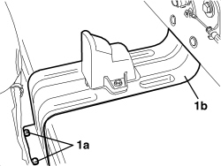
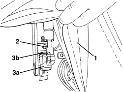
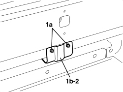
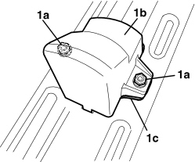

7030H30 END OF TRAVEL BUFFER BRACKET FOR HOOD FIFTH ARC - R.R.
- Path
- Procedures > 70 FITTINGS > 7030 SUN ROOF/GLASS PANEL > 7030H AUTOMATICALLY OPERATED HOOD > 7030H30 END OF TRAVEL BUFFER BRACKET FOR HOOD FIFTH ARC - R.R.
- Kind
- repair procedure (removal / refitting; the operation number is the code)
- Applies to
- engines: 2.2 JTS, 3.2 JTS; all production periods
- Interactive page
- https://sloeber94.github.io/elrnDB-aBrrSpdr/en/#/946004096
Applies to: engines: 2.2 JTS, 3.2 JTS; all production periods
 Removing
Removing
 Refitting
Refitting- Preapre the hood for the operation.
Op. 0010T79 HOOD HYDRAULIC SYSTEM - DISCHARGE AND RESTORE PRESSURE
Op. 7040C11 HOOD HOUSING COMPARTMENT FLOOR TRIM - R.R.
1. Undo the bolts (1a) securing the front backet (1b).

Applies to: engines: 2.2 JTS, 3.2 JTS; all production periods
Removing
Refitting- Prepare the hood for the procedure.
Op. 0010T79 HOOD HYDRAULIC SYSTEM - DISCHARGE AND RESTORE PRESSURE
- Raise the rear part of the hood.
- Unhook and pull the front seat backrest forward
1. Gently move the edge of the inner hood lining.
2. Loosen the threaded dowel for locking the pad.
3. Undo rubber pad (3a) and recover shim (3b).

Applies to: engines: 2.2 JTS, 3.2 JTS; all production periods
- Close the hood using the electric control.
Op. 7040B20 BACK TRIM FOR LUGGAGE COMPARTMENT/LOAD PLATFORM - ARRANGE
1. Undo the rear bracket (1b) retaining nuts (1a).
2. Remove the bracket.

Applies to: engines: 2.2 JTS, 3.2 JTS; all production periods
1. If necessary, undo the nuts (1a) and remove the buffer (1b) and the spacer (1c).

Applies to: engines: 2.2 JTS, 3.2 JTS; all production periods
Refitting
Removing- Check that the rubber pad is not damaged.
- Position the shim and tighten the rubber pad to its end of travel.
- Screw in the threaded dowel for locking the pad.
- Position the edge of the hood inner lining.
- Bring the front seat backrest back.
- If discharged, restore the hood hydraulic system pressure.
Op. 7030H03 HOOD MANUAL OPENING FOLLOWING DEACTIVATION OF HYDRAULIC SYSTEM - CARRY OUT PROCEDURE
- Check that the hood is working correctly.
Applies to: engines: 2.2 JTS, 3.2 JTS; all production periods
Refitting
Removing- Check that the bracket is not damaged.
- Position the spacer and the buffer, if removed and then tighten the nuts.
- Place the bracket in position and tighten the rear fixing nuts.
Op. 7040B20 BACK TRIM FOR LUGGAGE COMPARTMENT/LOAD PLATFORM - ARRANGE
- Close the boot lid.
1. Using the electric control, place the 5th arc (1a) in a raised position (as illustrated), the hood housing cover (1b) in a completely raised position and the side covers (flaps) (1c) in a lowered position (as illustrated).

Applies to: engines: 2.2 JTS, 3.2 JTS; all production periods
1. Tighten the bolts (1a) securing the front backet (1b).

Applies to: engines: 2.2 JTS, 3.2 JTS; all production periods
Op. 7040C11 HOOD HOUSING COMPARTMENT FLOOR TRIM - R.R.
- Check that the hood is working correctly.
Topics linked from this page (4)
- 0010T79 HOOD HYDRAULIC SYSTEM - DISCHARGE AND RESTORE PRESSURE
- 7030H03 HOOD MANUAL OPENING FOLLOWING DEACTIVATION OF HYDRAULIC SYSTEM - CARRY OUT PROCEDURE
- 7040B20 BACK TRIM FOR LUGGAGE COMPARTMENT/LOAD PLATFORM - ARRANGE
- 7040C11 HOOD HOUSING COMPARTMENT FLOOR TRIM - R.R.